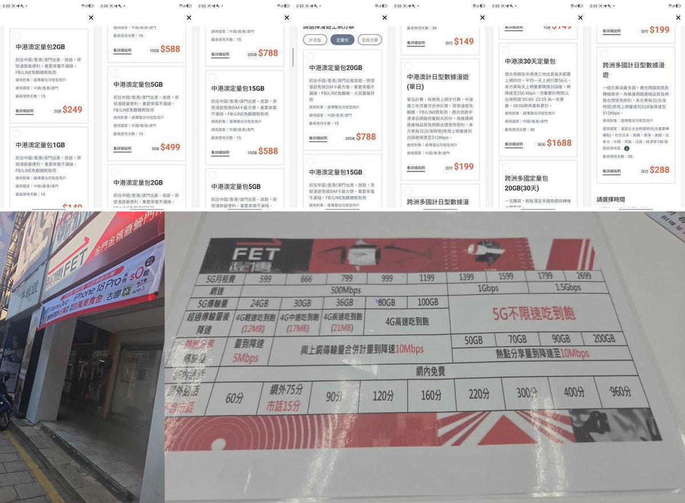
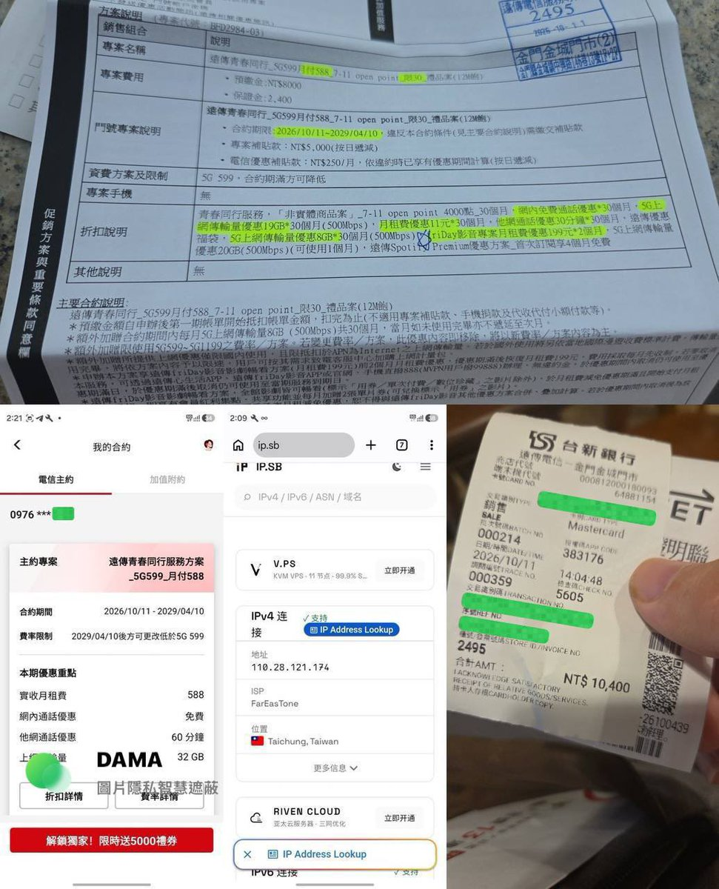

🌈Akiramenai💫
@Ak1raQ_love
远传电信真远传的，我在厦门岛内天天搜到这个信号，要用这张卡我连漫游都不用，其他运营商还得跑海边


所長
@ZIO00I
台湾SIM卡办理方法，+886真实号码，支持5G-NSA漫游及eSIM
讲下大家关注的台湾卡如何办理：（由X友提供）
注意，是 Postpaid（上台）不是Prepaid（预付）
大陆居民办理方法，需要的可以留意下：
✅运营商：FET傳遠電信
✅门市：金门金城直营门市（无需入台湾本岛，金门即可） https://t.co/Tjefg28dvB